Unit 6 - Clustering
This document concentrate the work of clustering in the TEA course.
1 Introduction
This week we'll discuss how analytics can be used to make recommendations for movies and for health. In the first lecture, we discuss how Netflix offered the million dollar prize to improve their movie recommendation system.
In the second lecture, we discuss how health care claims data can be used to predict the occurrence of a heart attack Through these examples, we'll discuss the method of clustering, which is used to find similarities and patterns in data.
2 Recommendations Worth a Million: An Introduction to Clustering

2.1 What is Netflix?
The recommendation systems in the Netflix business permit to the executives take some decisions about the tendencies of the market. The operating people is able to decide what kind of movies are potentially more interesting to their customers.
Have a movie theater for each customer. In order to manage the big volume of customers, Netflix needs an automated recommendation system. This system allow the company to select and propose the best titles for an specific customer.
The initial algorithm proposed could be improved, then the Netflix price was open in order to develop a better algorithm.

The contest rules:

Some initial and early results.

Then the history of the contest.
One of the best teams.
The winner!

Netflix was willing to pay over one million dollars for the best user rating algorithm, which shows how critical the recommendation system is to their business.
We will discuss how recommendation systems work. Let's start by thinking about the data. When predicting user ratings, what data could be useful? There are two main types of data that we could use. The first is that for every movie in Netflix's database, we have a ranking from all users who have ranked that movie. The second is that we know facts about the movie itself– the actors in the movie, the director, the genre classifications of the movie, the year it was released, etc.

As an example, suppose we have the following user ratings for four users and four movies.
The ratings are on a one to five scale, where one is the lowest rating and five is the highest rating. The blank entries mean that the user has not rated the movie. We could suggest to Carl that he watch Men in Black, since Amy rated it highly. She gave it a rating of five, and Amy and Carl seem to have similar ratings for the other movies.
This technique of using other user's ratings to make predictions is called collaborative filtering.
Note that we're not using any information about the movie itself here, just the similarity between users.
We saw in the table that Amy liked Men in Black. She gave it a rating of five. We know that this movie was directed by Barry Sonnenfeld, is classified in the genres of action, adventure, sci-fi, and comedy, and it stars actor Will Smith. Based on this information, we could make recommendations to Amy.
We could recommend to Amy another movie by the same director, Barry Sonnenfeld's movie, Get Shorty. We can instead recommend the movie Jurassic Park, which is also classified in the genres of action, adventure, and sci-fi. Or we could recommend to Amy another movie starring Will Smith– Hitch.
Note that we're not using the ratings of other users at all here, just information about the movie. This technique is called content filtering.
There are strengths and weaknesses to both types of recommendation systems.
Collaborative filtering can accurately suggest complex items without understanding the nature of the items. It didn't matter at all that our items were movies in the collaborative filtering example.
We were just comparing user ratings. However, this requires a lot of data about the user to make accurate recommendations. Also, when there are millions of items, it needs a lot of computing power to compute the user similarities.
On the other hand, content filtering requires very little data to get started. But the major weakness of content filtering is that it can be limited in scope.
You're only recommending similar things to what the user has already liked. So the recommendations are often not surprising or particularly insightful.
Netflix actually uses what's called a hybrid recommendation system. They use both collaborative and content filtering.

If we were only doing collaborative filtering, one of them would have had to have seen it before. And if we were only doing content filtering, we would only be recommending to one user at a time.
So by combining the two methods, the algorithm can be much more efficient and accurate. In the next video, we'll see how we can do content filtering by using a method called clustering.
2.2 Quick Question (2/2 points)
Let's consider a recommendation system on Amazon.com, an online retail site.
2.2.1 Question a
If Amazon.com constructs a recommendation system for books, and would like to use the same exact algorithm for shoes, what type would it have to be?
2.2.1.1 Answer
Collaborative Filtering.
2.2.2 Question b
If Amazon.com would like to suggest books to users based on the previous books they have purchased, what type of recommendation system would it be?
2.2.2.1 Answer
Content Filtering.
Explanation
In the first case, the recommendation system would have to be collaborative filtering, since it can't use information about the items. In the second case, the recommendation system would be content filtering since other users are not involved.
2.3 Video 3: Movie Data and Clustering
We will be using data from MovieLens to explain clustering and perform content filtering.
Movielens.org is a movie recommendation website run by the GroupLens research lab at the University of Minnesota. They collect user preferences about movies and do collaborative filtering to make recommendations to users, based on the similarities between users.
We'll use their movie database to do content filtering using a technique called clustering.
First, let's discuss what data we have. Movies in the MovieLens data set are categorized as belonging to different genres.
There are 18 different genres as well as an unknown category. The genres include crime, musical, mystery, and children's. Each movie may belong to many different genres. So a movie could be classified as drama, adventure, and sci-fi.
The question we want to answer is, can we systematically find groups of movies with similar sets of genres? To answer this question, we'll use a method called clustering.

To answer this question, we'll use a method called clustering. Clustering is different from the other analytics methods we've covered so far. It's called an unsupervised learning method. This means that we're just trying to segment the data into similar groups, instead of trying to predict an outcome. In this image on the slide, based on the locations of points, we've divided them into three clusters– a blue cluster, a red cluster, and a yellow cluster.
This is the goal of clustering– to put each data point into a group with similar values in the data. A clustering algorithm does not predict anything. However, clustering can be used to improve predictive methods.
You can cluster the data into similar groups and then build a predictive model for each group. This can often improve the accuracy of predictive methods. But as a warning, be careful not to over-fit your model to the training set. This works best for large data sets.
There are many different algorithms for clustering. They differ in what makes a cluster and how the clusters are found.
You'll learn how to create clusters using either method in R. There are other clustering methods also, but hierarchical and K-means are two of the most popular methods. To cluster data points, we need to compute how similar the points are. This is done by computing the distance between points.
2.4 Quick Question (1 point possible)
In the previous video, we discussed how clustering is used to split the data into similar groups. Which of the following tasks do you think are appropriate for clustering? Select all that apply.
2.4.1 Answer [2/3]
[X]Dividing search results on Google into categories based on the topic.[X]Grouping players into different "types" of basketball players that make it to the NBA.[ ]Predicting the winner of the Major League Baseball World Series.
Explanation
The first two options are appropriate tasks for clustering. Clustering probably wouldn't help us predict the winner of the World Series.
2.5 Video 4: Computing Distances
So how does clustering work? The first step in clustering is to define the distance between two data points. The most popular way to compute the distance is what's called Euclidean distance. This is the standard way to compute distance that you might have seen before.
The distance between the two points, which we'll call dij, is equal to the square root of the difference between the two points in the first component, squared, plus the difference between the two points in the second component, squared, all the way up to the difference between the two points in the k-th component, squared, where k here is the number of attributes or independent variables.
Let's see how this works by looking at an example. In our movie lens dataset, we have binary vectors for each movie, classifying that movie into genres. The movie Toy Story is categorized as an animation, comedy, and children's movie.
So the data for Toy Story has a 1 in the spot for these three genres and a 0 everywhere else.

The movie Batman Forever is categorized as an action, adventure, comedy, and crime movie. So Batman Forever has a 1 in the spot for these four genres and a 0 everywhere else.
So given these two data observations, let's compute the distance between them.
In addition to Euclidean distance, there are many other popular distance metrics that could be used. One is called Manhattan distance, where the distance is computed to be the sum of the absolute values instead of the sum of squares.
Another is called maximum coordinate distance, where we only consider the measurement for which the data points deviate the most.
Another important distance that we have to calculate for clustering is the distance between clusters, when a cluster is a group of data points.
We just discussed how to compute the distance between two individual points, but how do we compute the distance between groups of points?
One way of doing this is by using what's called the minimum distance. This defines the distance between clusters as the distance between the two data points in the clusters that are closest together.
For example, we would define the distance between the yellow and red clusters by computing the Euclidean distance between these two (marked) points.
The other points in the clusters could be really far away, but it doesn't matter if we use minimum distance. The only thing we care about is how close together the closest points are.
Alternatively, we could use maximum distance. This one computes the distance between the two clusters as the distance between the two points that are the farthest apart.
So for example, we would compute the distance between the yellow and red clusters by looking at these two points. Here, it doesn't matter how close together the other points are. All we care about is how close together the furthest points are.
The most common distance metric between clusters is called centroid distance. And this is what we'll use. It defines the distance between clusters by computing the centroid of the clusters.
The centroid is just the data point that takes the average of all data points in each component. This takes all data points in each cluster into account and can be thought of as the middle data point.
In our example, the centroids between yellow and red are here, and we would compute the distance between the clusters by computing the Euclidean distance between those two points.
When we are computing distances, it's highly influenced by the scale of the variables.

As an example, suppose you're computing the distance between two data points, where one variable is the revenue of a company in thousands of dollars, and another is the age of the company in years. The revenue variable would really dominate in the distance calculation.
The differences between the data points for revenue would be in the thousands. Whereas the differences between the year variable would probably be less than 10.
To handle this, it's customary to normalize the data first. We can normalize by subtracting the mean of the data and dividing by the standard deviation.
In our movie data set, all of our genre variables are on the same scale. So we don't have to worry about normalizing. But if we wanted to add a variable, like box office revenue, we would need to normalize so that this variable didn't dominate all of the others.
Now that we've defined how we'll compute the distances, we'll talk about a specific clustering algorithm: hierarchical clustering.
2.6 Quick Question (1 point possible)
The movie "The Godfather" is in the genres action, crime, and drama, and is defined by the vector: (0,1,0,0,0,0,1,0,1,0,0,0,0,0,0,0,0,0,0)
The movie "Titanic" is in the genres action, drama, and romance, and is defined by the vector: (0,1,0,0,0,0,0,0,1,0,0,0,0,0,1,0,0,0,0)
What is the distance between "The Godfather" and "Titanic", using euclidean distance?
writeLines("\n :: Euclidean distance:") v1 <- c(0,1,0,0,0,0,1,0,1,0,0,0,0,0,0,0,0,0,0) v2 <- c(0,1,0,0,0,0,0,0,1,0,0,0,0,0,1,0,0,0,0) d <- sqrt(sum((v1 - v2)^2)) d
:: Euclidean distance: [1] 1.414214
2.6.1 Answer
Explanation
The distance between these two movies is \(\sqrt{2}\). They have a difference of 1 in two genres - crime and romance.
2.7 Video 5: Hierarchical Clustering
In hierarchical clustering, the clusters are formed by each data point starting in its own cluster. As a small example, suppose we have five data points. Each data point is labeled as belonging in its own cluster. So this data point is in the red cluster, this one's in the blue cluster, this one's in the purple cluster, this one's in the green cluster, and this one's in the yellow cluster.
Then hierarchical clustering combines the two nearest clusters into one cluster. We'll use Euclidean and Centroid distances to decide which two clusters are the closest. In our example, the green and yellow clusters are closest together.
So we would combine these two clusters into one cluster. So now the green cluster has two points, and the yellow cluster is gone.
Now this process repeats. We again find the two nearest clusters, which this time are the green cluster and the purple cluster, and we combine them into one cluster.
Now the green cluster has three points, and the purple cluster is gone.
Now the two nearest clusters are the red and blue clusters. So we would combine these two clusters into one cluster, the red cluster.
So now we have just two clusters, the red one and the green one.
So now the final step is to combine these two clusters into one cluster.
So at the end of hierarchical clustering, all of our data points are in a single cluster.
The hierarchical cluster process can be displayed through what's called a dendrogram. The data points are listed along the bottom, and the lines show how the clusters were combined. The height of the lines represents how far apart the clusters were when they were combined.
So points 1 and 4 were pretty close together when they were combined. But when we combined the two clusters at the end, they were significantly farther apart. We can use a dendrogram to decide how many clusters we want for our final clustering model.
This dendrogram shows the clustering process with ten data points. The easiest way to pick the number of clusters you want is to draw a horizontal line across the dendrogram.
The number of vertical lines that line crosses is the number of clusters there will be. In this case, our line crosses two vertical lines, meaning that we will have two clusters– one cluster with points 5, 2, and 7, and one cluster with the remaining points.
The farthest this horizontal line can move up and down in the dendrogram without hitting one of the horizontal lines of the dendrogram, the better that choice of the number of clusters is.
If we instead selected three clusters, this line can't move as far up and down without hitting horizontal lines in the dendrogram. This probably means that the two cluster choice is better.
But when picking the number of clusters, you should also consider how many clusters make sense for the particular application you're working with.
After selecting the number of clusters you want, you should analyze your clusters to see if they're meaningful.
You can also check to see if the clusters have a feature in common that was not used in the clustering, like an outcome variable. This often indicates that your clusters might help improve a predictive model.
2.8 Quick Question (2 points possible)
Suppose you are running the Hierarchical clustering algorithm with 212 observations.
2.8.1 Question a
How many clusters will there be at the start of the algorithm?
2.8.1.1 Answer
212
2.8.2 Question b
How many clusters will there be at the end of the algorithm?
2.8.3 Answer
1
Explanation
The Hierarchical clustering algorithm always starts with each data point in its own cluster, and ends with all data points in the same cluster. So there will be 212 clusters at the beginning of the algorithm, and 1 cluster at the end of the algorithm.
2.9 Video 6: Getting the Data
We'll be downloading our dataset from the MovieLens website. Please open the following link in a new window or tab of your browser to access the data:
This video will show you how to load the data into R.
An R script file with all of the commands used in this Lecture can be downloaded here.
IMPORTANT NOTE: We'll be using a text editor in this video to get the data into R. If you are on a Mac and are using TextEdit, the default file type is .rtf, so you will need to change the file type to txt. To do this, just go to Format –> Make Plain Text, and the file will re-save as a txt file. Alternatively, depending on your operating system and web browser, you might just be able to save the file directly from the browser as a txt file.
2.9.1 Download the data sets
In this part we can download the data
library(parallel) if(!file.exists("../data")) { dir.create("../data") } fileUrl <- "http://files.grouplens.org/datasets/movielens/ml-100k/u.item" fileName <- "movieLens.txt" dataPath <- "../data" filePath <- paste(dataPath, fileName, sep = "/") if(!file.exists(filePath)) { download.file(fileUrl, destfile = filePath, method = "curl") } list.files("../data")
[1] "AnonymityPoll.csv" "baseball.csv" [3] "BoeingStock.csv" "boston.csv" [5] "ClaimsData.csv" "ClaimsData.csv.zip" [7] "climate_change.csv" "clinical_trial.csv" [9] "ClusterMeans.ods" "CocaColaStock.csv" [11] "CountryCodes.csv" "CPSData.csv" [13] "emails.csv" "energy_bids.csv" [15] "FluTest.csv" "FluTrain.csv" [17] "framingham.csv" "gerber.csv" [19] "GEStock.csv" "IBMStock.csv" [21] "loans_imputed.csv" "loans.csv" [23] "MetroAreaCodes.csv" "movieLens.txt" [25] "mvtWeek1.csv" "NBA_test.csv" [27] "NBA_train.csv" "parole.csv" [29] "pisa2009test.csv" "pisa2009train.csv" [31] "PollingData_Imputed.csv" "PollingData.csv" [33] "ProcterGambleStock.csv" "quality.csv" [35] "README.md" "songs.csv" [37] "stevens.csv" "stopwords.txt" [39] "tweets.csv" "USDA.csv" [41] "WHO_Europe.csv" "WHO.csv" [43] "wiki.csv" "wine_test.csv" [45] "wine.csv"
2.9.2 Load the data set
writeLines(" Loading data into their data frames.") movies <- read.table("../data/movieLens.txt", header = FALSE, sep = "|", quote = "\"") str(movies)
Loading data into their data frames.
'data.frame': 1682 obs. of 24 variables:
$ V1 : int 1 2 3 4 5 6 7 8 9 10 ...
$ V2 : Factor w/ 1664 levels "'Til There Was You (1997)",..: 1525 618 555 594 344 1318 1545 111 391 1240 ...
$ V3 : Factor w/ 241 levels "","01-Aug-1997",..: 71 71 71 71 71 71 71 71 71 182 ...
$ V4 : logi NA NA NA NA NA NA ...
$ V5 : Factor w/ 1661 levels "","http://us.imdb.com/M/title-exact?%22Langoliers,%20The%22%20(1995)%20(mini)",..: 1430 564 504 542 309 1661 1452 102 356 1182 ...
$ V6 : int 0 0 0 0 0 0 0 0 0 0 ...
$ V7 : int 0 1 0 1 0 0 0 0 0 0 ...
$ V8 : int 0 1 0 0 0 0 0 0 0 0 ...
$ V9 : int 1 0 0 0 0 0 0 0 0 0 ...
$ V10: int 1 0 0 0 0 0 0 1 0 0 ...
$ V11: int 1 0 0 1 0 0 0 1 0 0 ...
$ V12: int 0 0 0 0 1 0 0 0 0 0 ...
$ V13: int 0 0 0 0 0 0 0 0 0 0 ...
$ V14: int 0 0 0 1 1 1 1 1 1 1 ...
$ V15: int 0 0 0 0 0 0 0 0 0 0 ...
$ V16: int 0 0 0 0 0 0 0 0 0 0 ...
$ V17: int 0 0 0 0 0 0 0 0 0 0 ...
$ V18: int 0 0 0 0 0 0 0 0 0 0 ...
$ V19: int 0 0 0 0 0 0 0 0 0 0 ...
$ V20: int 0 0 0 0 0 0 0 0 0 0 ...
$ V21: int 0 0 0 0 0 0 1 0 0 0 ...
$ V22: int 0 1 1 0 1 0 0 0 0 0 ...
$ V23: int 0 0 0 0 0 0 0 0 0 1 ...
$ V24: int 0 0 0 0 0 0 0 0 0 0 ...
We need one more argument, which is quote="\"". Close the parentheses, and hit Enter. That last argument just made sure that our text was read in properly.
Let's take a look at the structure of our data using the str
function. We have 1,682 observations of 24 different variables.
Since our variables didn't have names, header equaled false, R just labeled them with V1, V2, V3, etc.
But from the Movie Lens documentation, we know what these variables are. So we'll go ahead and add in the column names ourselves.
writeLines("\n :: Add column names:") colnames(movies) = c("ID", "Title", "ReleaseDate", "VideoReleaseDate", "IMDB", "Unknown", "Action", "Adventure", "Animation", "Childrens", "Comedy", "Crime", "Documentary", "Drama", "Fantasy", "FilmNoir", "Horror", "Musical", "Mystery", "Romance", "SciFi", "Thriller", "War", "Western") names(movies)
:: Add column names: [1] "ID" "Title" "ReleaseDate" "VideoReleaseDate" [5] "IMDB" "Unknown" "Action" "Adventure" [9] "Animation" "Childrens" "Comedy" "Crime" [13] "Documentary" "Drama" "Fantasy" "FilmNoir" [17] "Horror" "Musical" "Mystery" "Romance" [21] "SciFi" "Thriller" "War" "Western"
We won't be using the ID, release date, video release date, or IMDB variables, so let's go ahead and remove them.
writeLines("\n :: Remove unnecessary variables:") movies$ID = NULL movies$ReleaseDate = NULL movies$VideoReleaseDate = NULL movies$IMDB = NULL names(movies)
:: Remove unnecessary variables: [1] "Title" "Unknown" "Action" "Adventure" "Animation" [6] "Childrens" "Comedy" "Crime" "Documentary" "Drama" [11] "Fantasy" "FilmNoir" "Horror" "Musical" "Mystery" [16] "Romance" "SciFi" "Thriller" "War" "Western"
And there are a few duplicate entries in our data set, so we'll go
ahead and remove them with the unique function.
writeLines("\n :: Remove duplicates:") movies = unique(movies) writeLines("\n :: Take a look at our data again:") str(movies)
:: Remove duplicates: :: Take a look at our data again: 'data.frame': 1664 obs. of 20 variables: $ Title : Factor w/ 1664 levels "'Til There Was You (1997)",..: 1525 618 555 594 344 1318 1545 111 391 1240 ... $ Unknown : int 0 0 0 0 0 0 0 0 0 0 ... $ Action : int 0 1 0 1 0 0 0 0 0 0 ... $ Adventure : int 0 1 0 0 0 0 0 0 0 0 ... $ Animation : int 1 0 0 0 0 0 0 0 0 0 ... $ Childrens : int 1 0 0 0 0 0 0 1 0 0 ... $ Comedy : int 1 0 0 1 0 0 0 1 0 0 ... $ Crime : int 0 0 0 0 1 0 0 0 0 0 ... $ Documentary: int 0 0 0 0 0 0 0 0 0 0 ... $ Drama : int 0 0 0 1 1 1 1 1 1 1 ... $ Fantasy : int 0 0 0 0 0 0 0 0 0 0 ... $ FilmNoir : int 0 0 0 0 0 0 0 0 0 0 ... $ Horror : int 0 0 0 0 0 0 0 0 0 0 ... $ Musical : int 0 0 0 0 0 0 0 0 0 0 ... $ Mystery : int 0 0 0 0 0 0 0 0 0 0 ... $ Romance : int 0 0 0 0 0 0 0 0 0 0 ... $ SciFi : int 0 0 0 0 0 0 1 0 0 0 ... $ Thriller : int 0 1 1 0 1 0 0 0 0 0 ... $ War : int 0 0 0 0 0 0 0 0 0 1 ... $ Western : int 0 0 0 0 0 0 0 0 0 0 ...
Let's take a look at our data one more time. Now, we have 1,664 observations, a few less than before, and 20 variables– the title of the movie, the unknown genre label, and then the 18 other genre labels.
2.10 Quick Question (3 points possible)
Using the table function in R, please answer the following questions about the dataset movies.
2.10.1 Question a
How many movies are classified as comedies?
2.10.1.1 Answer
writeLines("\n :: Number of movies classified as comedy:")
nrow(subset(movies, movies$Comedy == 1))
:: Number of movies classified as comedy: [1] 502
2.10.2 Question b
How many movies are classified as westerns?
2.10.2.1 Answer
writeLines("\n :: Number of movies classified as Western:")
nrow(subset(movies, movies$Western == 1))
:: Number of movies classified as Western: [1] 27
2.10.3 Question c
How many movies are classified as romance AND drama?
2.10.3.1 Answer
writeLines("\n :: Number of movies classified as Romance and Drama:") nrow(subset(movies, movies$Romance == 1 & movies$Drama == 1)) writeLines("\n :: Other way to answer this question:") nrow(movies[movies$Romance == 1 & movies$Drama == 1, ])
:: Number of movies classified as Romance and Drama: [1] 97 :: Other way to answer this question: [1] 97
Explanation
You can answer these questions by using the following commands:
table(movies$Comedy)
table(movies$Western)
table(movies$Romance, movies$Drama)
2.11 Video 7: Hierarchical Clustering in R
Important Note
In this video, we use the "ward" method to do hierarchical clustering. This method was recently renamed in R to "ward.D". If you are following along in R while watching the video, you will need to use the following command when doing the hierarchical clustering ("ward" is replaced with "ward.D"):
clusterMovies = hclust(distances, method = "ward.D")
We'll use hierarchical clustering to cluster the movies in the Movie Lens data set by genre. After we make our clusters, we'll see how they can be used to make recommendations.
There are two steps to hierarchical clustering. First we have to compute the distances between all data points, and then we need to cluster the points.
To compute the distances we can use the dist function. We only want to
cluster our movies on the genre variable, not on the title variable,
so we'll cluster on columns two through 20.
writeLines("\n :: Compute distances...") distances <- dist(movies[2:20], method = "euclidean")
:: Compute distances...
Now let's cluster our movies using the hclust function for
hierarchical clustering.
writeLines("\n :: Hierarchical clustering...") clusterMovies <- hclust(distances, method = "ward.D")
:: Hierarchical clustering...
The second argument is ~method="ward"~. The ward method cares about the distance between clusters using centroid distance, and also the variance in each of the clusters.
Now let's plot the dendrogram of our clustering algorithm:
Figure 37: Movies dendrogram of clustering method
This dendrogram might look a little strange. We have all this black along the bottom. Remember that the dendrogram lists all of the data points along the bottom. But when there are over 1,000 data points it's impossible to read.
We'll see later how to assign our clusters to groups so that we can analyze which data points are in which cluster.
So looking at this dendrogram, how many clusters would you pick? It looks like maybe three or four clusters would be a good choice according to the dendrogram, but let's keep our application in mind, too.
We probably want more than two, three, or even four clusters of movies to make recommendations to users.
It looks like there's a nice spot down here where there's 10 clusters. This is probably better for our application. We could select even more clusters if we want to have very specific genre groups.
If you want a lot of clusters it's hard to pick the right number from the dendrogram. You need to use your understanding of the problem to pick the number of clusters. Let's stick with 10 clusters for now, combining what we learned from the dendrogram with our understanding of the problem.
We can label each of the data points according to what cluster it belongs to using the cutree function.
writeLines("\n :: Assign points to clusters...") clusterGroups <- cutree(clusterMovies, k = 10)
:: Assign points to clusters...
Now let's figure out what the clusters are like. We'll use the tapply function to compute the percentage of movies in each genre and cluster.
So let's type tapply, and then give as the first argument, movies$Action– we'll start with the action genre– and then clusterGroups, and then mean.
So what does this do?
It divides our data points into the 10 clusters and then computes the average value of the action variable for each cluster. Remember that the action variable is a binary variable with value 0 or 1.
So by computing the average of this variable we're computing the percentage of movies in that cluster that belong in that genre.
tapply(movies$Action, clusterGroups, mean) tapply(movies$Romance, clusterGroups, mean)
1 2 3 4 5 6 7 8
0.1784512 0.7839196 0.1238532 0.0000000 0.0000000 0.1015625 0.0000000 0.0000000
9 10
0.0000000 0.0000000
1 2 3 4 5 6 7
0.10437710 0.04522613 0.03669725 0.00000000 0.00000000 1.00000000 1.00000000
8 9 10
0.00000000 0.00000000 0.00000000
So we can see here that in cluster 2, about \(78\%\) of the movies have the action genre label, whereas in cluster 4 none of the movies are labeled as action movies.
Let's try this again, but this time let's look at the romance genre. Here we can see that all of the movies in clusters six and seven are labeled as romance movies, whereas only \(4\%\) of the movies in cluster two are labeled as romance movies.
| Cluster 1 | Cluster 2 | Cluster 3 | Cluster 4 | Cluster 5 | Cluster 6 | Cluster 7 | Cluster 8 | Cluster 9 | Cluster 10 | |
|---|---|---|---|---|---|---|---|---|---|---|
| Action | 0.18 | 0.78 | 0.12 | 0.00 | 0.00 | 0.10 | 0.00 | 0.00 | 0.00 | 0.00 |
| Adventure | 0.19 | 0.35 | 0.04 | 0.00 | 0.00 | 0.00 | 0.00 | 0.00 | 0.00 | 0.00 |
| Animation | 0.13 | 0.01 | 0.00 | 0.00 | 0.00 | 0.00 | 0.00 | 0.00 | 0.00 | 0.00 |
| Childrens | 0.39 | 0.01 | 0.01 | 0.00 | 0.00 | 0.00 | 0.00 | 0.00 | 0.00 | 0.00 |
| Comedy | 0.36 | 0.07 | 0.06 | 0.00 | 1.00 | 0.11 | 1.00 | 0.02 | 1.00 | 0.16 |
| Crime | 0.03 | 0.01 | 0.41 | 0.00 | 0.00 | 0.05 | 0.00 | 0.00 | 0.00 | 0.00 |
| Documentary | 0.01 | 0.00 | 0.00 | 0.00 | 0.00 | 0.00 | 0.00 | 1.00 | 0.00 | 0.00 |
| Drama | 0.31 | 0.11 | 0.38 | 1.00 | 0.00 | 0.66 | 0.00 | 0.00 | 1.00 | 0.00 |
| Fantasy | 0.07 | 0.00 | 0.00 | 0.00 | 0.00 | 0.00 | 0.00 | 0.00 | 0.00 | 0.00 |
| Film Noir | 0.00 | 0.00 | 0.11 | 0.00 | 0.00 | 0.01 | 0.00 | 0.00 | 0.00 | 0.00 |
| Horror | 0.02 | 0.08 | 0.02 | 0.00 | 0.00 | 0.02 | 0.00 | 0.00 | 0.00 | 1.00 |
| Musical | 0.19 | 0.00 | 0.00 | 0.00 | 0.00 | 0.00 | 0.00 | 0.00 | 0.00 | 0.00 |
| Mystery | 0.00 | 0.00 | 0.28 | 0.00 | 0.00 | 0.00 | 0.00 | 0.00 | 0.00 | 0.00 |
| Romance | 0.10 | 0.05 | 0.04 | 0.00 | 0.00 | 1.00 | 1.00 | 0.00 | 0.00 | 0.00 |
| Sci-Fi | 0.07 | 0.35 | 0.04 | 0.00 | 0.00 | 0.00 | 0.00 | 0.00 | 0.00 | 0.00 |
| Thriller | 0.04 | 0.38 | 0.61 | 0.00 | 0.00 | 0.14 | 0.00 | 0.00 | 0.00 | 0.16 |
| War | 0.23 | 0.02 | 0.00 | 0.00 | 0.00 | 0.00 | 0.00 | 0.02 | 0.00 | 0.00 |
| Western | 0.09 | 0.00 | 0.00 | 0.00 | 0.00 | 0.00 | 0.00 | 0.00 | 0.00 | 0.00 |
| Misc | Action-Adventure-SciFi | Crime-Mystery-Thriller | Drama | Comedy | Romance | Romantic Comedies | Documentary | Dramatic Comedies | Horror |
Knowing common movie genres, these clusters seem to make a lot of sense.
Let's see how these clusters could be used in a recommendation system.
Remember that Amy liked the movie Men in Black. Let's figure out what cluster Men in Black is in.
writeLines("\n :: Id of the movie:") subset(movies, Title == "Men in Black (1997)") writeLines("\n :: Find which cluster Men in Black is in:") clusterGroups[257]
:: Id of the movie:
Title Unknown Action Adventure Animation Childrens Comedy
257 Men in Black (1997) 0 1 1 0 0 1
Crime Documentary Drama Fantasy FilmNoir Horror Musical Mystery Romance
257 0 0 0 0 0 0 0 0 0
SciFi Thriller War Western
257 1 0 0 0
:: Find which cluster Men in Black is in:
257
2
I knew that this is the title of Men in Black because I looked it up in our data set. So it looks like Men in Black is the 257th row in our data. So which cluster did the 257th movie go into?
It looks like Men in Black went into cluster 2. That make sense since we just saw that cluster 2 is the action, adventure, sci-fi cluster.
So let's create a new data set with just the movies from cluster two.
writeLines("\n :: Create a new data set with just the movies from cluster 2:") cluster2 <- subset(movies, clusterGroups == 2) writeLines("\n :: Look at the first 10 titles in this cluster:") cluster2$Title[1:10]
:: Create a new data set with just the movies from cluster 2: :: Look at the first 10 titles in this cluster: [1] GoldenEye (1995) [2] Bad Boys (1995) [3] Apollo 13 (1995) [4] Net, The (1995) [5] Natural Born Killers (1994) [6] Outbreak (1995) [7] Stargate (1994) [8] Fugitive, The (1993) [9] Jurassic Park (1993) [10] Robert A. Heinlein's The Puppet Masters (1994) 1664 Levels: 'Til There Was You (1997) ...
So it looks like good movies to recommend to Amy, according to our clustering algorithm, would be movies like Apollo 13 and Jurassic Park.
In this video we saw how clustering can be applied to create a movie recommendation system.
2.11.1 An Advanced Approach to Finding Cluster Centroids
In this video, we explain how you can find the cluster centroids by using the function tapply for each variable in the dataset. While this approach works and is familiar to us, it can be a little tedious when there are a lot of variables.
An alternative approach is to use the colMeans function. With this approach, you only have one command for each cluster instead of one command for each variable. If you run the following command in your R console, you can get all of the column (variable) means for cluster 1:
colMeans(subset(movies[2:20], clusterGroups == 1))
You can repeat this for each cluster by changing the clusterGroups number. However, if you also have a lot of clusters, this approach is not that much more efficient than just using the tapply function.
A more advanced approach uses the split and lapply functions. The
following command will split the data into subsets based on the
clusters:
spl = split(movies[2:20], clusterGroups)
Then you can use spl to access the different clusters, because
spl[ [1] ]
is the same as
subset(movies[2:20], clusterGroups == 1)
so colMeans(spl[ [1] ]) will output the centroid of cluster 1. But
an even easier approach uses the lapply function. The following
command will output the cluster centroids for all clusters:
lapply(spl, colMeans)
The lapply function runs the second argument (colMeans) on each
element of the first argument (each cluster subset in spl). So instead
of using 19 tapply commands, or 10 colMeans commands, we can output
our centroids with just two commands: one to define spl, and then the
lapply command.
Note that if you have a variable called "split" in your current R session, you will need to remove it with rm(split) so that you can use the split function.
2.12 Quick Question (1 point possible)
Run the cutree function again to create the cluster groups, but this
time pick k = 2 clusters. It turns out that the algorithm groups all
of the movies that only belong to one specific genre in one cluster
(cluster 2), and puts all of the other movies in the other cluster
(cluster 1).
What is the genre that all of the movies in cluster 2 belong to?
writeLines("\n :: Assign points to clusters...") clusterGroups2 <- cutree(clusterMovies, k = 2) spl = split(movies[2:20], clusterGroups2) writeLines("\n :: Percentage of movies in each cluster:") lapply(spl, colMeans)
:: Assign points to clusters...
:: Percentage of movies in each cluster:
$`1`
Unknown Action Adventure Animation Childrens Comedy
0.001545595 0.192426584 0.102782071 0.032457496 0.092735703 0.387944359
Crime Documentary Drama Fantasy FilmNoir Horror
0.082689335 0.038639876 0.267387944 0.017001546 0.018547141 0.069551777
Musical Mystery Romance SciFi Thriller War
0.043276662 0.046367852 0.188562597 0.077279753 0.191653787 0.054868624
Western
0.020865533
$`2`
Unknown Action Adventure Animation Childrens Comedy
0 0 0 0 0 0
Crime Documentary Drama Fantasy FilmNoir Horror
0 0 1 0 0 0
Musical Mystery Romance SciFi Thriller War
0 0 0 0 0 0
Western
0
2.12.1 Answer
Drama
Explanation
You can redo the cluster grouping with just two clusters by running the following command:
clusterGroups = cutree(clusterMovies, k = 2)
Then, by using the tapply function just like we did in the video, you can see the average value in each genre and cluster. It turns out that all of the movies in the second cluster belong to the drama genre.
Alternatively, you can use colMeans or lapply as explained below Video 7.
2.13 Video 8: The Analytics Edge of Recommendation Systems
Recommendation systems are used in many different areas other than movies.
Jeff Bezos, the CEO of Amazon, said that, "If I have 3 million customers on the web, I should have 3 million stores on the web."
The internet allows for mass personalization, and recommendation systems are a key part of that. Recommendation systems build models about users' preferences to personalize the user experience.
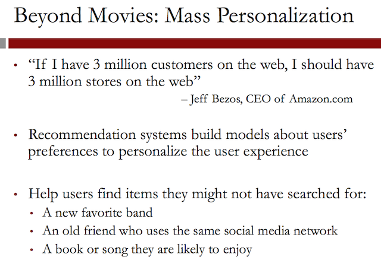
Recommendation systems are a cornerstone of these top businesses. Social networking sites, like Facebook, music streaming sites, like Pandora, and retail companies, like Amazon, all provide recommendation systems for their users.
Both collaborative filtering and content filtering are used in practice. Collaborative filtering is used by companies like Amazon, Facebook, and Google News. Content filtering is used by companies like Pandora, Rotten Tomatoes, and See This Next. And Netflix uses both collaborative filtering and content filtering.
So now let's go back to the Netflix prize.
To really test the algorithms, Netflix tested them on a private test set that the teams had never seen before. This is the true test of predictive ability.
On September 18, 2009, Netflix announced that the winning team was Bellkor's Pragmatic Chaos. They won the competition and the $1 million grand prize.
Recommendation systems provide a significant edge to many companies. In today's digital age, businesses often have hundreds of thousands of items to offer their customers, whether they're movies, songs , or people they might know on Facebook.
Excellent recommendation systems can make or break these businesses. Clustering algorithms, which are tailored to find similar customers or similar items, form the backbone of many of these recommendation systems.
Clustering also has many other interesting applications. In the next lecture, we'll see how clustering can be used to improve the predictive ability of classification methods.
3 Predictive Diagnosis: Discovering Patterns for Disease Detection
3.1 Video 1: Heart Attacks
We discuss the idea of predictive analytics in medicine. Specifically, we introduce the idea of using clustering methods for better predicting heart attacks.
Heart attacks are a common complication of coronary heart disease, resulting from the interruption of blood supply to part of the heart. Heart attack is the number one cause of death for both men and women in the United States. About one in every four deaths is due to heart attack.
A 2012 report from the American Heart Association estimates about 715,000 Americans have a heart attack every year. To put this number into perspective, this means that every 20 seconds, a person has a heart attack in the United States.
It is also equivalent of September the 11th repeating itself every 24 hours, 365 days a year.
Nearly half of these attacks occur without prior warning signs. In fact, 250,000 Americans die of sudden cardiac death yearly, which means 680 people every day die of sudden cardiac death.
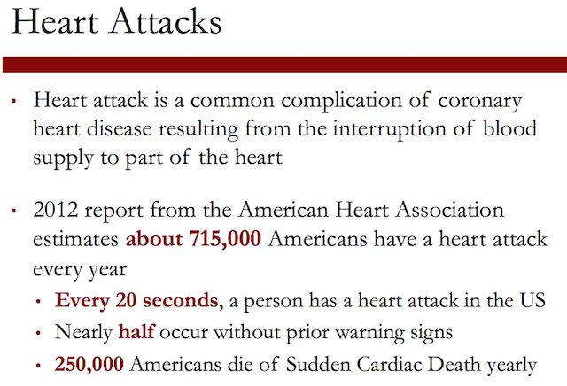
A heart attack has well-known symptoms: chest pain, shortness of breath, upper body pain, nausea. The nature of heart attacks, however, makes it hard to predict, prevent, and even diagnose. Here are some statistics.

How can analytics help? The key to helping patients is to understand the clinical characteristics of patients in whom heart attacks was missed.
We need to better understand the patterns in a patient's diagnostic history that link to heart attack and to predicting whether a patient is at risk for a heart attack.
We'll see, how analytics helps to understand patterns of heart attacks and to provide good predictions that in turn lead to improved monitoring and taking action early and effectively.
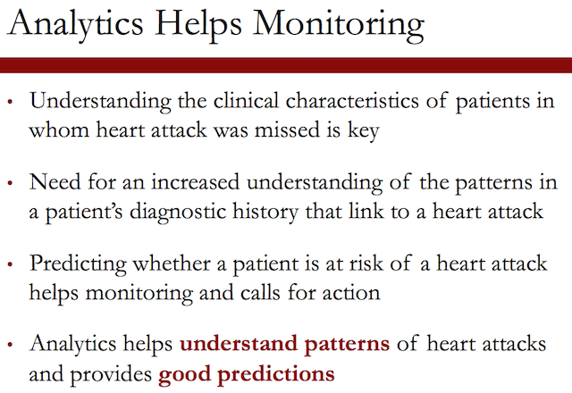
3.2 Quick Question (1/1 point)
In this class, we've learned many different methods for predicting outcomes. Which of the following methods is designed to be used to predict an outcome like whether or not someone will experience a heart attack? Select all that apply.
3.2.1 Answer [3/4]
[ ]Linear Regression[X]Logistic Regression[X]CART[X]Random Forest
Explanation
Logistic Regression, CART, and Random Forest are all designed to be used to predict whether or not someone has a heart attack, since this is a classification problem. Linear regression would be appropriate for a problem with a continuous outcome, such as the amount of time until someone has a heart attack. In this lecture, we'll use random forest, but the other methods could be used too.
3.3 Video 2: The Data
Claims data offers an expansive view of the patient's health history. Specifically, claims data include information on demographics, medical history, and medications. They offer insights regarding a patient's risk. And as I will demonstrate, may reveal indicative signals and patterns.
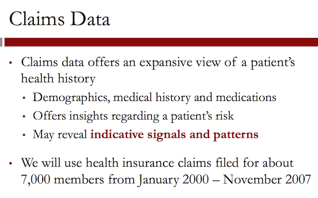
We concentrated on members with the following attributes. These selections yield patients with a high risk of heart attack, and a reasonably rich medical history with continuous coverage.
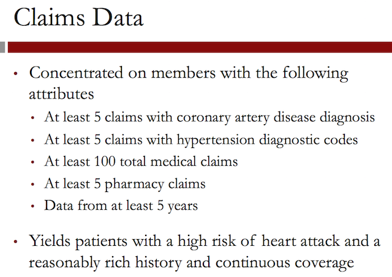
Let us discuss how we aggregated this data. The resulting data sets includes about 20 million health insurance entries, including individual, medical, and pharmaceutical records.
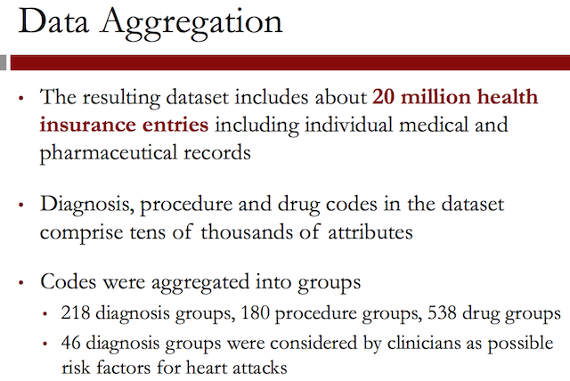
Let us discuss how we view the data over time. It is important in this study to view the medical records chronologically, and to represent a patient's diagnosis profile over time.
So we record the cost and number of medical claims and hospital visits by a diagnosis. All the observations we have span over five years of data. They were split into 21 periods, each 90 days in length.
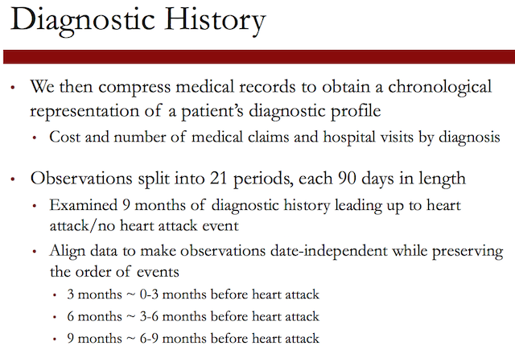
What was the target variable we were trying to predict? The target prediction variable is the occurrence of a heart attack. We define this from a combination of several claims. Namely, diagnosis of a heart attack, alongside a trip to the emergency room, followed by subsequent hospitalization.
We define this from a combination of several claims. Namely, diagnosis of a heart attack, alongside a trip to the emergency room, followed by subsequent hospitalization. Only considering heart attack diagnosis that are associated with a visit to the emergency room, and following hospitalization helps ensure that the target outcome is in fact a heart attack event.
The target variable is binary. It is denoted by plus 1 or minus 1 for the occurrence or non-occurrence of a heart attack in the targeted period of 90 days.
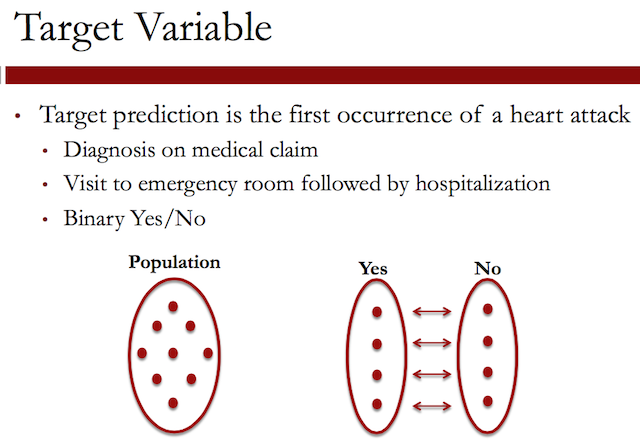
How is the data organized? There were 147 variables.
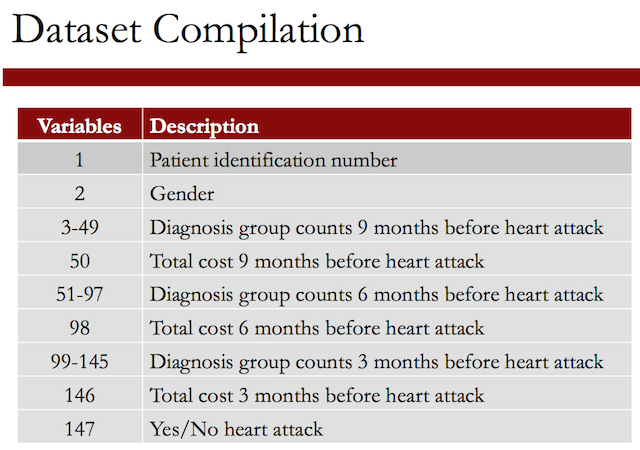
Cost of medical care is a good summary of a person's health. In our database, the total cost of medical care in the three 90 day periods preceding the heart attack target event ranged from $0 to $636,000 and approximately 70% of the overall cost was generated by only 11% of the population.
This means that the highest patients with high medical expenses are a very small proportion of the data, and could skew our final results.
According to the American Medical Association, only 10% of individuals have projected medical expenses of approximately $10,000 or greater per year, which is more than four times greater than the average projected medical expenses of $2,400 per year.
To lessen the effects of these high-cost outliers, we divided the data into different cost buckets, based on the findings of the American Medical Association.
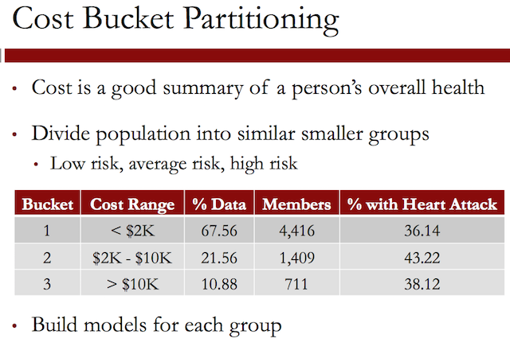
We did not want to have too many cost bins because the size of the data set. The table in the slide gives a summary of the cost bucket partitions. Patients with expenses over $10,000 in the nine month period were allocated to cost bucket 3.
Patients with less than $2,000 in expenses were allocated to cost bucket 1. And the remaining patients with costs between $2,000 and $10,000 to cost bucket 2.
Please note that the majority of patients, 4,400 out of 6,500, or 67.5% of all patients fell into the first bucket of low expenses.
3.4 Quick Question (2 points possible)
In the previous video, we discussed how we split the data into three groups, or buckets, according to cost.
3.4.1 Question a
Which bucket has the most data, in terms of number of patients?
3.4.1.1 Answer [1/3]
[X]Cost Bucket 1[ ]Cost Bucket 2[ ]Cost Bucket 3
3.4.2 Question b
Which bucket probably has the densest data, in terms of number of claims per person?
3.4.2.1 Answer [1/3]
[ ]Cost Bucket 1[ ]Cost Bucket 2[X]Cost Bucket 3
Explanation
Cost Bucket 1 contains the most patients (see slide 7 of the previous video), and Cost Bucket 3 probably has the densest data, since these are the patients with the highest cost in terms of claims.
3.5 Video 3: Predicting Heart Attacks using Clustering
Let us discuss the performance of a benchmark algorithm. The Random Forest algorithm is known for its attractive property of detecting variable interactions and excellent performance as a learning algorithm. For this reason, we're selecting the Random Forest algorithm as a benchmark– initially, we randomly partitioned the full data set into two separate parts, where the split was 50-50, and the partitioning was done evenly within each cost bin.
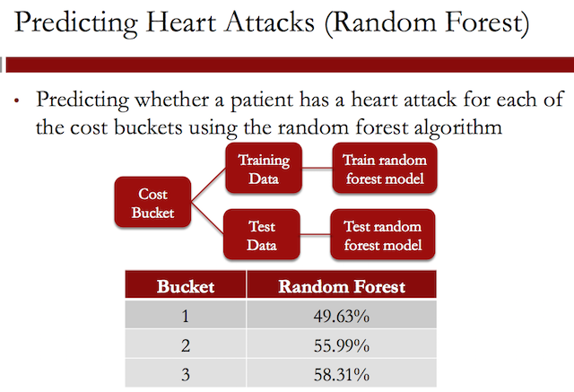
The first part, the training set, was used to develop the method. The second part, the test set, was used to evaluate the model's performance. The table in this slide reports the accuracy of the Random Forest algorithm on each of the three buckets.
Let us now introduce the idea of clustering. Patients in each bucket may have different characteristics. For this reason, we create clusters for each cost bucket and make predictions for each cluster using the Random Forest algorithm.
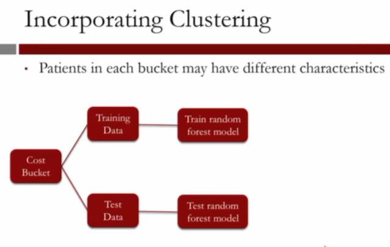
For this reason, we create clusters for each cost bucket and make predictions for each cluster using the Random Forest algorithm.
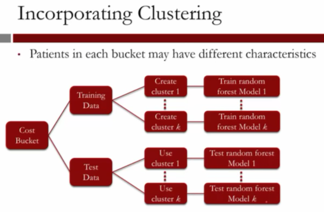
Clustering is mostly used in the absence of a target variable to search for relationships among input variables or to organize data into meaningful groups.
In this study, although the target variable is well-defined as a heart attack or not a heart attack, there are many different trajectories that are associated with the target.
There's not one set pattern of health or diagnostic combination that leads a person to heart attack. Instead, we'll show that there are many different dynamic health patterns and time series diagnostic relations preceding a heart attack.
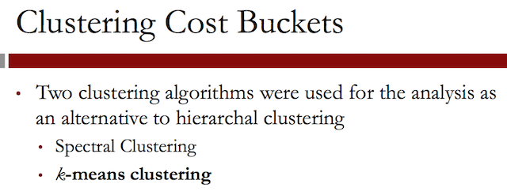
The clustering methods we used were spectral clustering and k-means clustering. We focus, in the lecture, on the k-means clustering. The broad description of the algorithm is as follows.
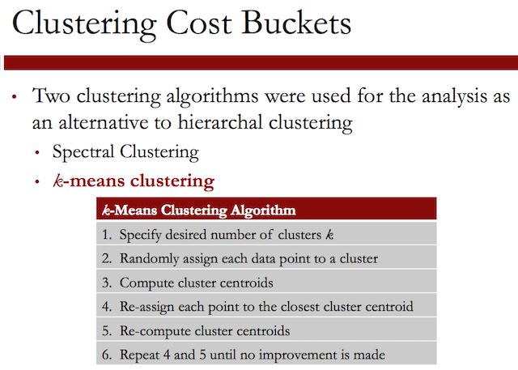
Let us illustrate the k-means algorithm in action. We specify the
desired number of clusters k. In this case, we use k = 2.
We then randomly assign each data point to a cluster.
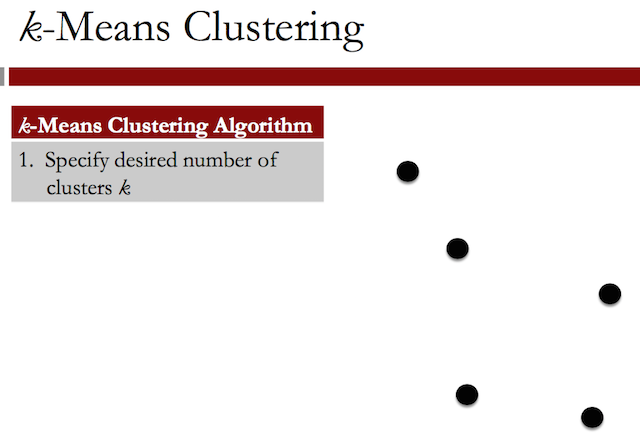
Randomly assign each data point to a cluster:
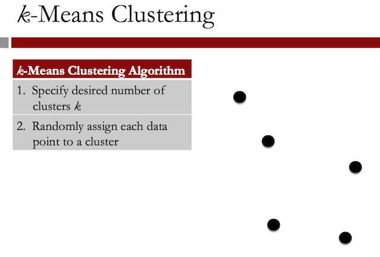
In this case, we have the three points in red, and the two points in black.
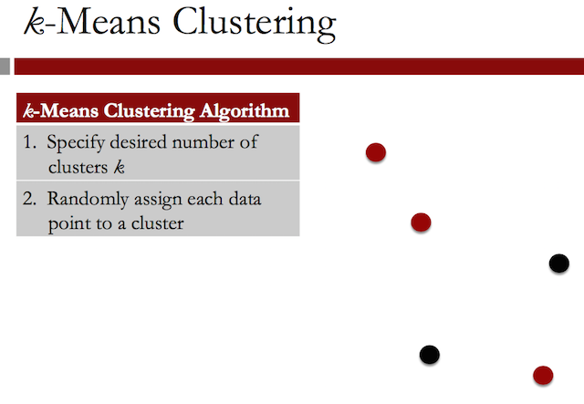
We then compute the cluster centroids, of the points showed.
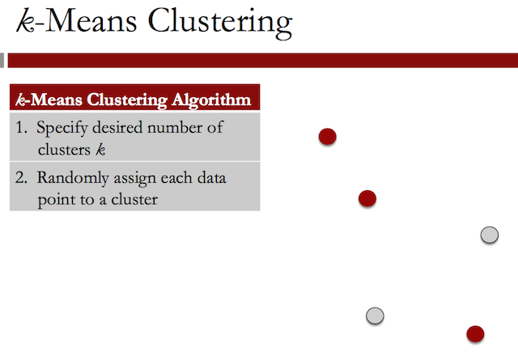
When we compute the cluster centroids, indicated by the red x and the grey x. We re-assign each point to the closest cluster centroid.

and now you observe that this point changes from a red to a gray.
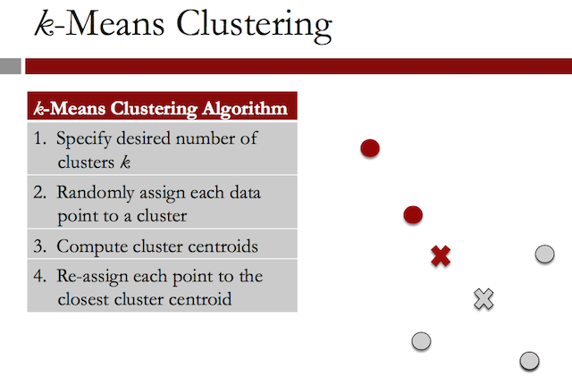
We re-compute the cluster centroids, and we repeat the previous steps, 4 and 5 until no improvement is made. You can see the initial centroids:
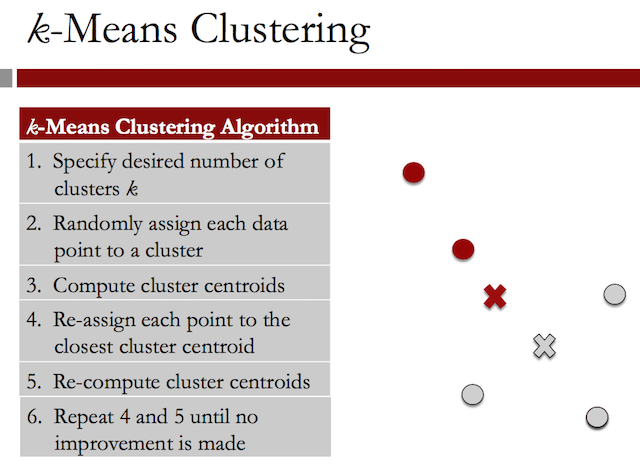
And now the new calculated centroids. We observe that, in this case, the k-means clustering is done, and this is our final clustering.
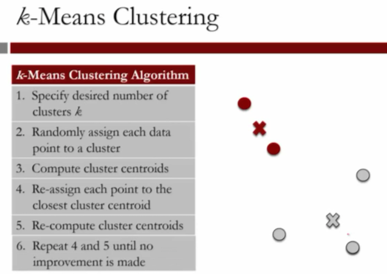
Let us discuss some practical considerations.
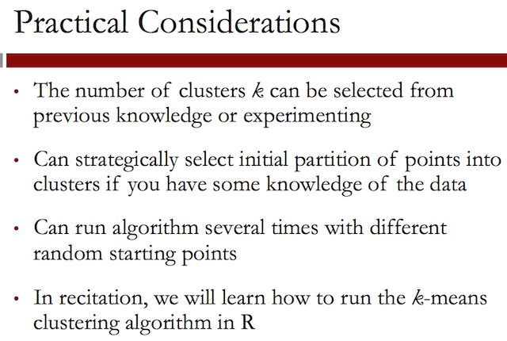
So how do we measure performance? After we construct the clusters in the training set, we assign new observations to clusters by proximity to the centroid of each cluster.
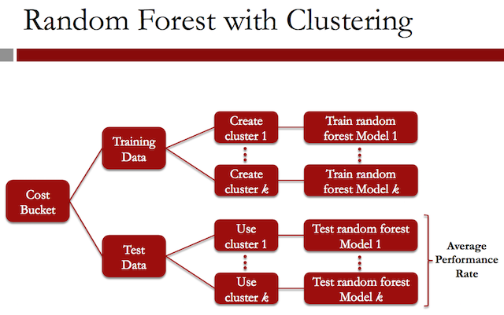
We measure performance by recording the average performance rate in each cluster.
Let us now discuss the performance of the clustering methods. We perform clustering on each bucket using k=10 clusters.
In the table we record the average prediction rate of each cost bucket. We observe a very visible improvement when we use clustering– from 49% to 64%, from 56% to 73%, from 58% to 78%.
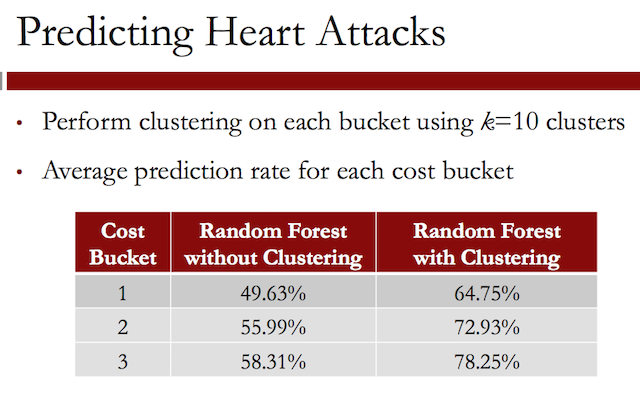
3.6 Quick Question (1 point possible)
K-means clustering differs from Hierarchical clustering in a couple important ways. Which of the following statements is true?
3.6.1 Answer [1/2]
[X]In k-means clustering, you have to pick the number of clusters you want before you run the algorithm.[ ]In k-means clustering, you can pick the number of clusters you want after the algorithm is done, just like in Hierarchical clustering.
Explanation
In k-means clustering, you have to pick the number of clusters before you run the algorithm, but the computational effort needed is much less than that for hierarchical clustering (we'll see this in more detail during the recitation).
3.7 Video 4: Understanding Cluster Patterns
Let us see what we learned about the patterns that emerge. We will show that the clusters are interpretable and reveal unique patterns of diagnostic history among the population.
We selected six patterns to present in this lecture– Cluster 1, 6, and 7, in Cost Bucket 2, and Clusters 4, 5, and 10, in Cost Bucket 3.
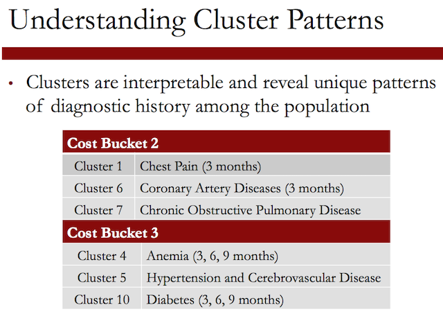
The first pattern shows the occurrence of chest pain three months before the heart attack. Note that the red dots depict the visits per diagnosis for patients in Cluster 1– this is, we think, Bucket 2– and the blue dots depict the visits per diagnosis for patients in Bucket 2 throughout.
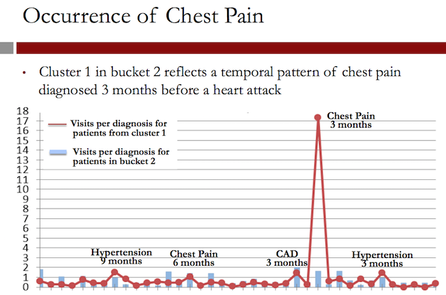
Note the very significant increase for visits related to chest pains three months before the event. About 17, three months before for the red patients, and about 1 and 1/2 visits for the blue patients.
The next pattern reveals an increasing occurrence of chronic obstructive pulmonary disease, COPD, for short. Patients from Cluster 7 in Bucket 2 have regular doctor visits for COPD.
Note that nine months before, we have 4 and 1/2 visits (red) versus 0.5 (blue) visits. Six months before, we have almost 7 visits versus 1/2 a visit, and three months before, we have 9 visits versus 1/2 a visit for COPD, so a clear increasing pattern.

The next pattern shows gradually increasing occurrence of anemia. The red line shows the patients in Cluster 4 increasingly visit the doctor for anemia from nine months on before the event.
Nine months before, members have an average of 9 visits to the doctor for anemia. This increases to an average of 11 visits six months before the event, and then an average of 15 visits three months before the event, a clear increasing pattern.
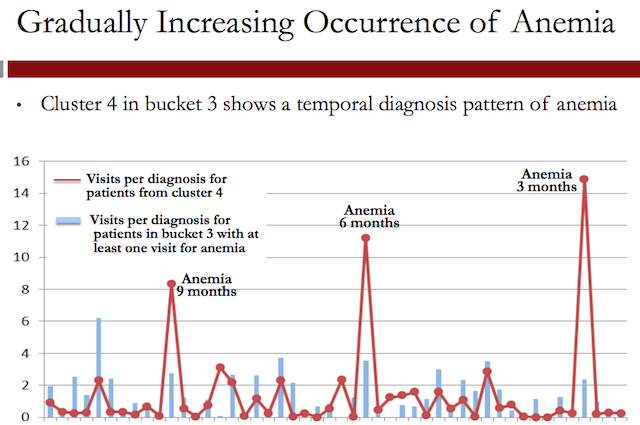
The final pattern shows the occurrence of diabetes as a pattern for heart attacks. It is well known that both types 1 and 2 diabetes are associated with accelerated atherosclerosis, one of the main causes of myocardial infarction– heart attacks, that is.
Well known diagnoses associated with heart attacks, such as diabetes, hypertension, and hyperlipidemia, characterize many of the patterns of the consistency of care throughout all of the cost buckets and clustering models.
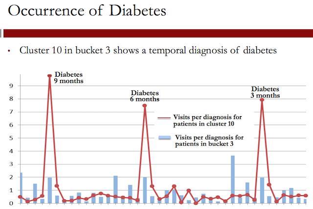
You observe a difference, here, of the number of visits for diabetes for the population that had the event versus the average population.
3.8 Quick Question (1 point possible)
As we saw in the previous video, the clusters can be used to find interesting patterns of health in addition to being used to improve predictive models. By changing the number of clusters, you can find more general or more specific patterns.
If you wanted to find more unusual patterns shared by a small number of people, would you increase or decrease the number of clusters?
3.8.1 Answer [1/2]
[X]Increase[ ]Decrease
Explanation
If you wanted to find more unusual patterns, you would increase the number of clusters since the clusters would become smaller and more patterns would probably emerge.
3.9 Video 5: The Analytics Edge
What is the impact of clustering?
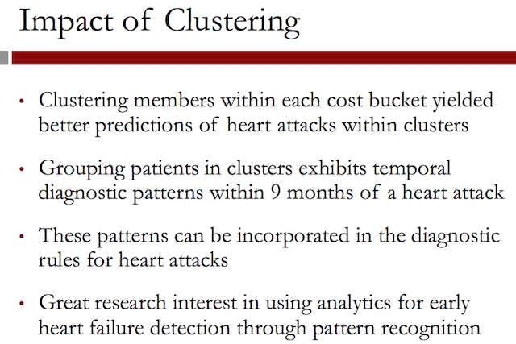
The approach shows that using analytics for early heart failure detection through pattern recognition can lead to interesting new insights.
The findings here are reinforced by results from our research. IBM, Sutter Health, and Geisinger Health Systems partnered in 2009 to research analytics tools in view of early detection.
Important insights
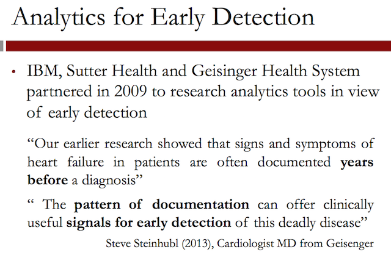
Steve Steinhubl, a cardiologist from Geisinger, wrote, "our early research showed the signs and symptoms of heart failure in patients are often documented years before diagnosis.
The pattern of documentation can offer clinically useful signals for early detection of this deadly disease."